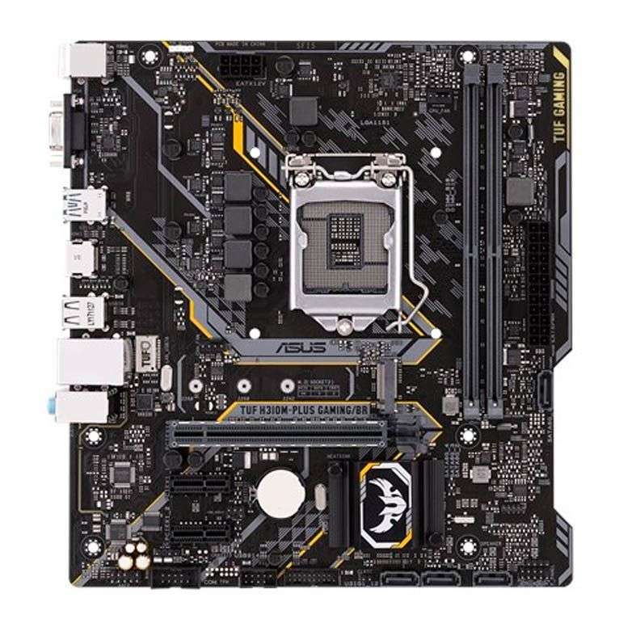

PLACA MAE ASUS TUF H310M-PLUS GAMING/BR DDR4 SOCKET LGA1151 CHIPSET INTEL H310

Especificações
Marca
Asus
Modelo
TUF H310M-Plus Gaming/BR
Processador
Intel® Socket 1151 para 9ª e 8ª geração de processadores
CoreTM i7/CoreTM i5/CoreTM i3/Pentium®/Celeron®
Suporta processadores Intel® de 14 nm
Suporta a tecnologia Intel® Turbo Boost 2.0
Chipset
Intel® H310
Memória
Memória 2 x DIMM, máximo de 32GB, DDR4 2666/2400/2133
MHz Non-ECC, Un-buffered
Gráfico
Processador Gráfico Integrado
Saída Multi-VGA: portas HDMI/D-Sub -
- Suporta VGA com resolução máxima de 1920 x 1200 @ 60 Hz
- Suporta HDMI com resolução máxima de 4096 x 2160 @ 24 Hz / 2560 x
1600 @ 60 Hz
Máximo de memória compartilhada 1024 MB
Suporta Intel® InTruTM 3D, Quick Sync Video, Clear Video HD Technology, InsiderTM
Slots de Expansão
1 x PCIe 3.0/2.0 x16 (x16)
2 x PCIe 2.0 x1
Armazenamento
Intel® H310 Chipset
1 x M.2 Socket 3, com M Key, suporte a dispositivos de armazenamento tipo
2242/2260/2280 (modo PCIE 2.0 x4 & SATA)
4 x Porta(s) SATA 6Gb/s,
LAN
Intel® I219V, 1 x Gigabit LAN
TUF LANGuard
Áudio
Realtek® ALC887 com 7.1-Channel - CODEC de alta definição *
Recursos de áudio:
- Proteção de Áudio: Garante precisão na separação analógica/digital e reduz
a maioria das interferências multi-laterais.
- Camadas de áudio PCB dedicadas: Camadas separadas para o canal direito
e esquerdo para proteger a qualidade dos sinais sensíveis de áudio.
Premium Japanese-made 12K hours capacitores
USB
4 x Porta(s) USB 3.1 Gen 1 up to 5Gbps (2 no painel traseiro, azul, conectores
internos para mais 2 porta(s), Type-A)
Intel® H310 Chipset:
6 x Porta(s) USB 2.0/1.1 (4 no painel traseiro, preta(s), conectores internos para
mais 2 porta(s), Type-A)
Características especiais
ASUS TUF PROTECTION
- ASUS SafeSlot: Proteja o investimento em placas de vídeo
- ASUS ESD Guard: Proteção ESD aprimorada
- ASUS Proteção contra sobretensão: Melhor proteção do circuito de energia
- ASUS Painel I/O Traseiro de Aço Inoxidável: 3X mais resistente à corrosão
para maior durabilidade!
- ASUS DIGI+ VRM: Design de energia digital de 5 fases
ASUS OptiMem:
- Optimem (Improved DDR4 stability)
ASUS EPU :
- EPU
Recursos exclusivos ASUS:
- AI Suite 3
- Ai Charger
- ASUS BIOS UEFI - Modo EZ com interface gráfica amigável.
- EZ XMP ASUS Exclusive Features
- PC Cleaner
- File Transfer
Solução ASUS Quiet Thermal:
- ASUS Fan Xpert
ASUS EZ DIY :
- ASUS EZ Flash 3
- ASUS MyLogo 2
- ASUS UEFI BIOS EZ Mode
ASUS Q-Design :
- ASUS Q-Slot
- ASUS Q-DIMM
Digi+VRM
AURA: RGB Lighting Control
M.2 Onboard(The latest transfer technologies with up to 20 Gb/s data
transfer speeds)
Painel Traseiro
1 x PS/2 mouse (verde)
1 x HDMI
4 x Porta(s) USB 2.0
3 x Conector(es) de áudio
2 x USB 3.1 Gen 1 até 5Gbps
1 x VGA
1 x 5G LAN(RJ45) port(s)
Painel Interno
1 x entrada USB 3.1 Gen 1, com suporte a 2 portas USB 3.1 Gen 1 adicionais(19-pin)
1 x entrada(s) USB 2.0, com suporte a 2 portas USB 2.0 adicional(s)
1 x conectores(s) para porta COM
1 x conector(es) de ventoinha do processador (1 x 4 -pin)
4 x conectores SATA 6Gb/s
1 x conector(es) de ventoinha do chassi (1 x 4 -pin)
1 x RGB Header(s)
1 x leitor(es) externo(s) S/PDIF
1 x conector(es) de força EATX de 24 pinos
1 x M.2 Socket 3
1 x conector(es) de áudio para o painel frontal (AAFP)
1 x painel(s) do sistema
1 x 8-pin EATX 12V Power connectors
1 x jumper Clear CMOS
1 x System panel connector
1 x Speaker connector
BIOS
128 Mb Flash ROM, UEFI AMI BIOS, PnP, SM BIOS 3.1, ACPI 6.1, Multi-
language BIOS, ASUS EZ Flash 3, CrashFree BIOS 3, F6 Qfan Control, F3 My
Favorites, Last Modified log, F12 PrintScreen, and ASUS DRAM SPD (Serial
Presence Detect) memory information, F4 AURA ON/OFF, F9 Search
Gerenciamento
WOL by PME, PXE
Sistema Operacional
Windows® 10 de 64 bits
Formato
Micro ATX, 22.6 x 20.8 cm